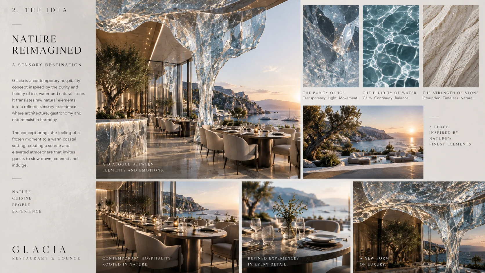
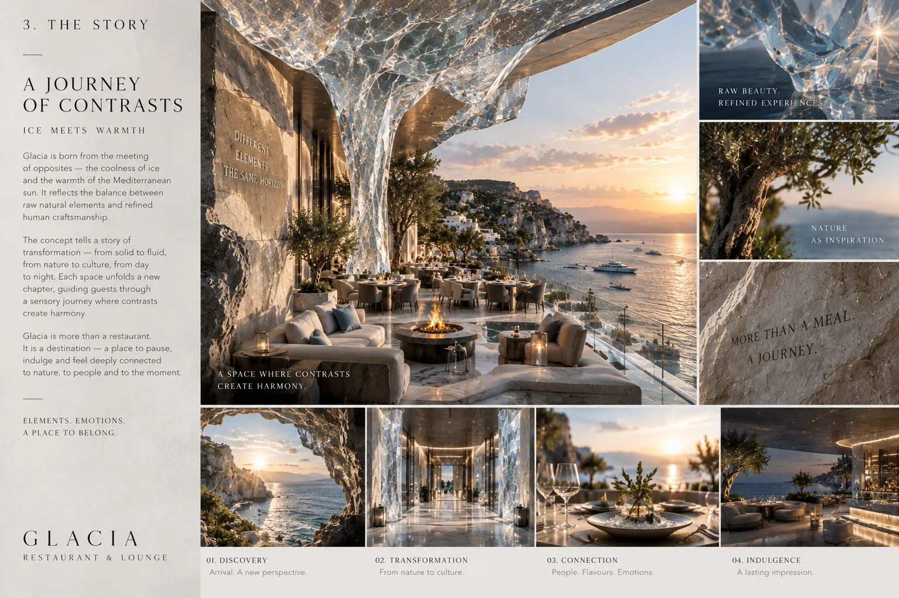
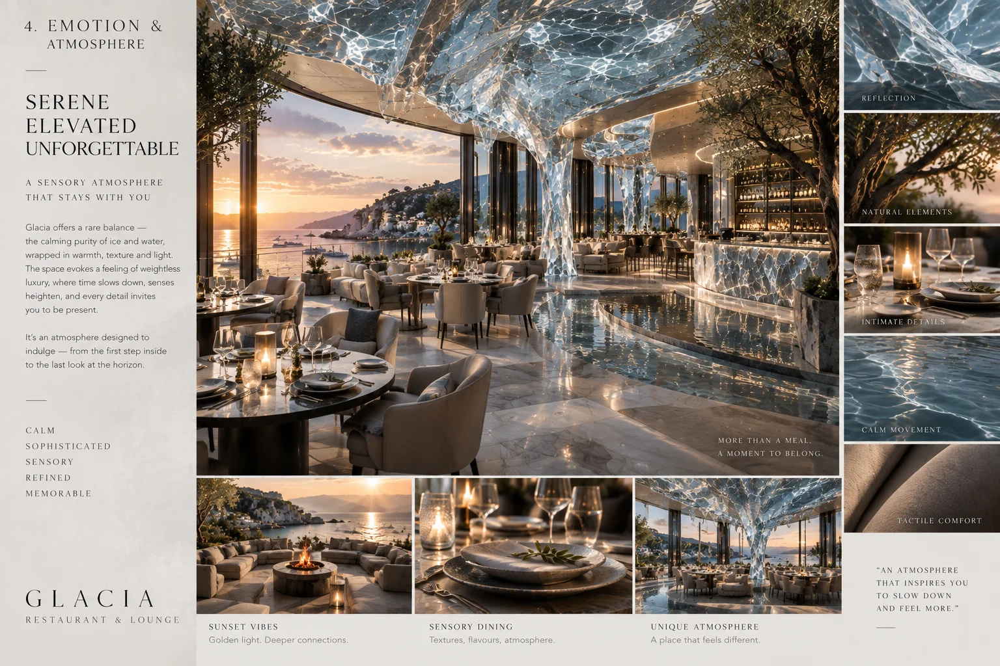
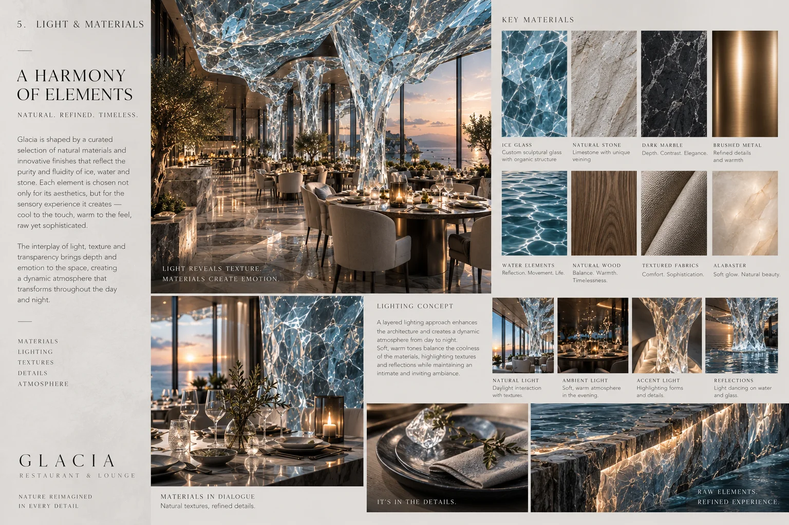
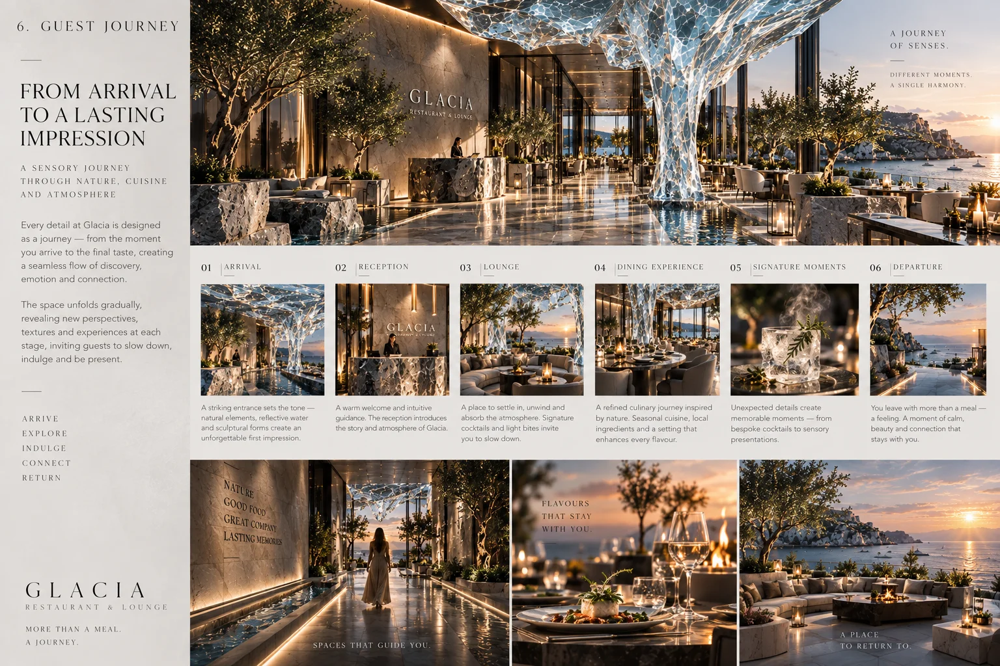
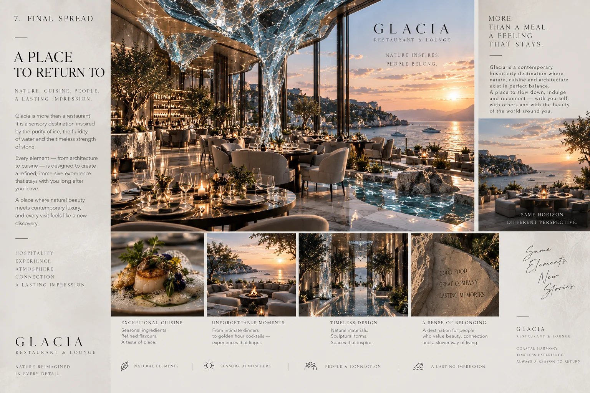

Restaurant & lounge concept
GLACIA
Dining inside light, ice and glass — a frozen landscape made warm at the table.

GLACIA is a restaurant and lounge concept that stages the beauty of ice without its cold. Columns of rippled glass, translucent surfaces and cool blue light create the feeling of dining inside a glacier, while warm table lighting and soft seating keep the experience intimate and comfortable. The concept is a study in contrasts: frozen and fluid, sharp and soft, cold light and warm company. Nature is reimagined rather than copied — the room borrows the clarity and drama of ice, then makes it hospitable.
Material direction
Rippled and cast glass; translucent resin; polished chrome and silver leaf; pale stone; white leather and bouclé; mirrored surfaces. These are concept-stage material directions, with final products and detailing to be developed separately.
My role
Concept, atmosphere, lighting, materials and guest journey — Maria Andriiuk.
Concept & story
The story is a journey of contrasts. Guests move from a bright, crystalline world toward warmer, softer moments at the table. Each zone of the restaurant holds a different state of water — ice, melt, flow — so the meal becomes a slow thaw from spectacle to comfort.
Emotion & atmosphere
The intended mood is crystalline, calm and quietly spectacular. Cool light washes the glass columns while candles and low lamps keep every table warm. The contrast between the frozen room and the warm table is the emotion the concept is built around.
Light & material direction
Cool ambient light through translucent surfaces sets the scene; precise warm accents at tables and the bar make the food and the guests the warmest objects in the room. Rippled glass, chrome and pale stone carry the reflections. Technical lighting and final specifications would be resolved during further design development.
Guest journey
01 / Arrival — Into a bright, crystalline world of glass and cool light. 02 / Acclimatise — A first drink in the lounge as the eyes adjust. 03 / The table — Warm light, soft seating and the comfort of the meal. 04 / The thaw — The room seems to warm as the evening deepens. 05 / Return — Guests leave with the lasting impression of light itself.
Project scope
This self-initiated, unbuilt concept is presented through seven boards covering the idea, story, atmosphere, light and materials, guest journey and final composition. Concept imagery communicates the creative direction. Measured planning, construction documentation, engineering and site delivery are outside this concept study.

The idea — Nature reimagined: the clarity and drama of ice, made hospitable.Open full size ↗
The story — A journey of contrasts, from crystalline spectacle to comfort.Open full size ↗
Emotion & atmosphere — Cool light on glass, warm light on the table.Open full size ↗
Light & materials — A harmony of elements: rippled glass, chrome, pale stone and layered light.Open full size ↗
Guest journey — From arrival to a lasting impression: five moments of thaw.Open full size ↗
Final spread — A place to return to: the full composition of light, ice and glass.Open full size ↗